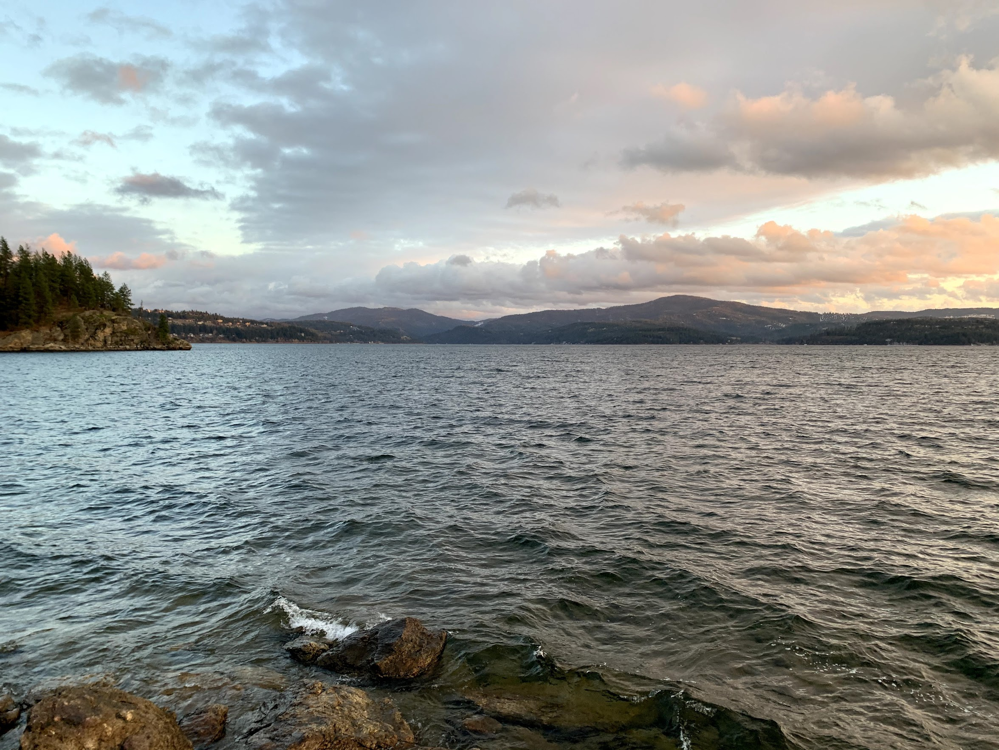

Coeur d'Alene, Idaho
Mountain lake living in the American Redoubt

Overview
Coeur d'Alene is a stunning lake city nestled in the Idaho panhandle, surrounded by mountains, forests, and some of the best outdoor recreation in the country. Once a quiet lumber and mining town, it has experienced massive growth driven by migration from California and Washington, as families and remote workers seek lower taxes, safer communities, and a more conservative way of life.
The city sits at the heart of the American Redoubt movement -- a deliberate migration of conservative Christian families to the inland Northwest. This has created one of the strongest conservative communities in the nation, with active churches, engaged school boards, and a deeply family-oriented culture. The broader evangelical community is robust, though the Reformed church presence is small but growing.
The tradeoff is cost. The influx of newcomers has driven housing prices well above the national average, with a median home at $601K. The overall cost of living sits 15% above the national index. However, Idaho's very low property taxes (0.32-0.63%) and flat 5.3% income tax partially offset this. Spokane, Washington is just 35 minutes west, providing big-city amenities -- airports, healthcare, shopping -- without the need to live in a larger metro.
Scores
How Coeur d'Alene ranks across all six evaluation categories (1-10 scale). Weighted overall: 5.75 / 10 (Rank #12 of 16).
Cost of Living
Overall index 115 -- above the national average, driven primarily by housing and transportation costs.
| Category | Index | Notes |
|---|---|---|
| Overall | 115 | 15% above national average |
| Housing | 137 | Primary cost driver |
| Transportation | 119 | Car-dependent area |
| Groceries | 111 | 11% above national average |
| Utilities | 100 | National average |
Flat rate on all income
State rate, no local additions
Very low; ~$2,520 on a $400K home
Idaho's flat 5.3% income tax is moderate, but the very low property tax rates are a significant advantage for homeowners. On a $400K home, expect roughly $2,520/year in property taxes -- well below most states in the comparison set. The 6% sales tax has no local additions, keeping retail costs predictable. The median household income of $73,526 is below the national median, reflecting the area's shift from blue-collar industries to a mix of healthcare, remote work, and service economy.
Housing and Land
Median home price $601K -- expensive for the region but with good land availability in surrounding areas.
Housing index 137
Balanced market conditions
| Area | Price Range | Family Rating | Notes |
|---|---|---|---|
| Hayden | $475K-$550K | Good | Growing suburb, good schools, NICS located here |
| Post Falls | $425K-$500K | Good | More affordable, Immanuel PCA, Kootenai Classical |
| Dalton Gardens | $500K-$800K+ | Excellent | 1-acre min lots, horses allowed, semi-rural enclave |
| Rathdrum | $400K-$550K | Good | Small-town feel, highest growth, larger parcels |
Land and Acreage
Ranch and acreage land in Kootenai County runs around $55K per acre (median). Bonner County to the north is cheaper and offers more remote options. The Rathdrum Prairie area between Coeur d'Alene and Post Falls has become the primary growth corridor with larger parcels still available. Dalton Gardens enforces 1-acre minimum lots with horse-friendly agricultural zoning, making it ideal for equestrian families. Spirit Lake and areas north of Hayden offer more rural properties at lower prices.
For families seeking acreage with horses, Idaho's agricultural zoning is permissive. Many properties in the surrounding areas allow livestock without special permits, and the region's agricultural heritage means fencing, water, and barn infrastructure are commonly found on existing properties.
Education
Score: 6/10 -- Two classical Christian schools, strong homeschool community, and permissive Idaho laws.
Classical Christian Schools
| School | Grades | Tuition | Students | Notes |
|---|---|---|---|---|
| Classical Christian Academy | K-12 | $7,490 | 164 | Christ-centered classical, 8:1 student-teacher ratio, founded 1995 |
| Kootenai Classical Academy | K-10 (expanding to K-12 by 2027) | Tuition-free (public charter) | -- | Hillsdale-affiliated, Cognia accredited, classical liberal arts with virtue emphasis. Located in Post Falls. |
Other Private Schools
| School | Grades | Tuition | Notes |
|---|---|---|---|
| North Idaho Christian School | K-12 | $6,638 | 206 students, 30+ years established, needs-based tuition available |
| Coeur du Christ Academy | 9-12 | Sliding scale | Catholic classical high school, opened 2022. 49 students, growing to 150 capacity. 8:1 ratio. Cardinal Newman Society recommended. Downtown CDA. |
Homeschool Community
Idaho has some of the most permissive homeschool laws in the country -- no notification to the state is required, no curriculum approval, no standardized testing. This has attracted a very strong homeschool community to the Coeur d'Alene area.
| Organization | Type | Notes |
|---|---|---|
| Classical Conversations - CDA | Classical Christian | Communities meeting in the Idaho panhandle |
| INCH | Christian | Inland Northwest Christian Homeschoolers, regional support network |
| CDA Homeschool Community | Support | Covers CDA, Hayden, Rathdrum, and Post Falls |
Notable Mention
Logos School in Moscow, Idaho -- part of the Doug Wilson/CREC ecosystem and one of the original classical Christian schools in America -- is 84 miles south. While too far for a daily commute, the Moscow classical Christian community has a significant cultural influence on the broader Idaho panhandle homeschool and education scene.
Public schools rate B with an 89% graduation rate in the Coeur d'Alene School District 271.
Faith
Score: 5/10 -- Small but present Reformed community with strong broader evangelical support.
| Church | Denomination | Size | Notes |
|---|---|---|---|
| Covenant OPC (Hayden) | OPC | Small | Particularized in 2021, several young families actively involved |
| Immanuel Presbyterian Church (Post Falls) | PCA | Small (plant) | Founded 2023, growing PCA church plant |
| Trinity Church CDA | CREC | Small-Medium | Connected to the Moscow CREC ecosystem |
| Moscow CREC Community | CREC | Large | 84 miles south. Christ Church (Doug Wilson), Logos School, New Saint Andrews College. Culturally influential but not local. |
The Reformed church presence in Coeur d'Alene is small but meaningful. The OPC and PCA both have young, growing congregations with families. Trinity CDA provides a CREC option locally, connected to the much larger Moscow CREC community 84 miles south. While Moscow's Christ Church and its associated institutions (Logos School, New Saint Andrews College, Canon Press) are too far for weekly attendance from CDA, Doug Wilson's cultural influence extends throughout the Idaho panhandle.
The broader evangelical community is strong. Real Life Ministries is one of the largest churches in Idaho. Candlelight Christian Fellowship and numerous other Bible churches serve the area. Organizations like American Heritage Girls and Trail Life provide structured youth programs. The American Redoubt migration has brought an influx of theologically serious Christian families, strengthening the faith community overall even if the specifically Reformed footprint remains modest.
Lifestyle
Score: 8/10 -- Outstanding outdoor recreation, four distinct seasons, and very low crime.
Climate
| Season | High | Low | Character |
|---|---|---|---|
| Spring | 57F | 35F | Cool, gradual warming, some rain |
| Summer | 82F | 52F | Warm, dry, long daylight hours |
| Fall | 55F | 34F | Crisp, colorful, ideal hiking |
| Winter | 35F | 24F | Cold, snowy (42 inches annually) |
Real winters with consistent snow
Annual days of sunshine
Short commutes across the metro
Outdoor Recreation
| Activity | Quality | Details |
|---|---|---|
| Lake Recreation | 5/5 | Lake CDA (25 miles long), Priest Lake, Hayden Lake |
| Skiing | 5/5 | Silver Mountain (35 mi), Schweitzer (58 mi), Lookout Pass |
| Hiking | 5/5 | Trail of the Coeur d'Alenes (73 mi), Tubbs Hill, Idaho Panhandle National Forest |
| Fishing/Hunting | 5/5 | Premier state for both. Lake and river fishing, elk, deer, bear |
| Equestrian | 4/5 | National forest horse trails, multiple trailheads, ag-zoned properties |
Violent: 242 per 100K. Property: 956 per 100K.
CDA Resort, Silverwood Theme Park, Spokane 35 min
Community
Score: 9/10 -- Excellent family-friendliness, very strong conservative and homeschool communities.
Metro area ~188K
Some areas growing faster
Near national median age
| Factor | Rating |
|---|---|
| Family Friendliness | Excellent |
| Homeschool Community | Very Strong |
| Conservative Presence | Very Strong |
| Small Town Feel | Yes |
| Remote Work Friendly | High |
The Coeur d'Alene metro (~188K) retains a genuine small-town feel despite rapid growth. The American Redoubt migration has been the defining demographic force, bringing conservative Christian families from west coast states who are intentionally building community around shared values. This is not an abstract political leaning -- it manifests in active school board participation, church-driven civic engagement, and a volunteer culture centered on faith and family.
Spokane, Washington sits just 35 minutes west, providing access to a major airport (GEG), regional healthcare (Providence, MultiCare), big-box retail, and cultural venues without the need to live in a larger metro. This proximity to a mid-sized city is a significant practical advantage -- you get small-town Idaho living with easy access to urban amenities.
The growth rate of 1.0% annually means the community continues to evolve. Longtime residents sometimes note tension between the established rural character and newcomer influence, but the overall trajectory strongly favors a conservative, family-oriented community.
Christian Community Deep Dive
North Idaho as a destination for faith-driven migration -- the American Redoubt, the Moscow connection, church landscape, internal tensions, and how to get plugged in.
Key Churches and Pastors
The CDA metro has a layered church landscape -- from a 7,000-person megachurch to small confessional congregations planted within the last few years. Below are the churches most relevant to a family evaluating the area.
| Church | Tradition | Pastor | Size | Notes |
|---|---|---|---|---|
| Covenant OPC (Hayden) | OPC | Rev. Todd Smith | Small | Particularized 2021. Westminster Standards. Young families, confessional and covenantal. The Machen tradition in North Idaho. |
| Immanuel PCA (Post Falls) | PCA | Rev. Seth Miller | Small (plant) | Mission status 2023, organized by 2025. Morning and evening Lord's Day services. "Planting ordinary churches" ethos. |
| Trinity CDA | CREC | Rev. Stuart Bryan | Small-Medium | CREC (Knox Presbytery). Bryan is an RTS graduate. Postmillennial, Kuyperian, Wilson-orbit. Active in local public discourse. |
| Real Life Ministries (Post Falls) | Non-denom evangelical | Jim Putman (founder) | 7,000+ | Largest church in North Idaho. Multi-campus (Post Falls, CDA, Hayden, Spirit Lake). Discipleship- and small-group-focused. Not Reformed, but where you'll encounter the broadest cross-section of Christian families. |
| Candlelight Christian Fellowship | Non-denom (dispensational) | Paul Van Noy | Medium-Large | Founded 1997 by California transplants. Hosts Homeschool Idaho North Conference. Significant overlap with KCRCC political network. AHG troop. |
| Grace Bible Church | Non-denom (Reformed-leaning) | Gene Speer | ~350 | Founded 1975. Traditional hymns, expositional preaching. Good option for Reformed-flavored teaching without denominational affiliation. |
| Anglican Reformation (Post Falls) | ACNA | -- | Plant | Confessional evangelical Anglican. Liturgical. Planter also serves as Academic Dean at Bonner Classical Academy. |
| Kootenai Community Church | Independent (Ref. soteriology) | Jim Osman | Medium | Near Sandpoint (45 min north). Author and conference speaker. Doctrinally serious. Active podcast ministry. |
| Occidental Reformed | Independent (theonomic) | Vacant | Home church | Westminster Standards, postmillennial, theonomic (Bahnsen). Niche but signals how theologically specific the North Idaho migration has become. |
The Moscow Connection
Moscow, Idaho (pop. ~26,000, home of the University of Idaho) sits 84 miles south of Coeur d'Alene. It is the headquarters of what has become the most influential conservative Christian institutional network in the inland Northwest -- and increasingly, nationally.
| Institution | Founded | Role |
|---|---|---|
| Christ Church | mid-1970s | Flagship CREC congregation. ~900 members (plus ~400 at Trinity Reformed Church of Moscow). Together roughly 5% of Moscow's population. |
| New Saint Andrews College (NSA) | 1994 | Private classical Christian liberal arts college. Single integrated curriculum. Draws families nationally, some settle in CDA instead of Moscow. |
| Canon Press | 1988 | Wilson's publishing house. 100+ titles. Intellectual engine of the CREC movement. Made national news offering to buy Christianity Today for $10M. |
| Logos School | 1981 | One of the first classical Christian schools in America. 410+ students K-12. Hosts the largest ACCS teacher training event. Wilson was a founding board member. |
| CREC (denomination) | 1998 | 130+ churches in 40 states and 25+ countries. Estimated 15,000+ members. Grew rapidly during COVID. Postmillennial, patriarchal complementarian, Christian nationalist. |
| Greyfriars Hall | -- | Pastoral apprenticeship program producing future CREC pastors. |
How Connected is CDA to Moscow?
Directly: Trinity CDA (CREC, pastored by Stuart Bryan) is the organizational link. Families in the Wilson orbit in CDA typically attend Trinity. Some NSA alumni and families relocate to the CDA area, attending Trinity or other Reformed churches while remaining part of the broader network.
Indirectly: Wilson's intellectual influence far exceeds organizational presence. Conservative Christians in CDA who don't attend a CREC church have often read Canon Press books, follow Wilson's blog or podcast, or send children to classical schools influenced by the ACCS model he helped create. The influence is asymmetric -- the ideas permeate the broader subculture even where people don't formally affiliate.
But CDA is not Moscow. Moscow is small enough that Christ Church can exercise outsized influence on real estate, business, and local politics. CDA (metro pop. ~194,000) is too large for any single church to dominate. The Christian community here is broader, more denominationally diverse, and less Wilson-centric. Many conservative Christians in CDA have no particular connection to Wilson and may be skeptical of his more provocative positions.
National prominence: Defense Secretary Pete Hegseth attends a CREC church (Pilgrim Hill Reformed Fellowship near Nashville) and has publicly praised Wilson's writings. Wilson preached at the Pentagon in February 2026. Christ Church recently planted a DC congregation for members relocating for Trump administration positions. This raises the profile of the entire CREC network, including Trinity CDA.
A balanced take on Doug Wilson: Wilson is the single most influential figure in North Idaho conservative Christianity at the national level -- author of 70+ books, co-founder of the CREC, and the person most responsible for catalyzing the classical Christian education movement. He is also deeply polarizing. His slavery pamphlet, patriarchal theology, inflammatory rhetoric, and the handling of sexual abuse allegations across CREC congregations generate real division even among conservative Christians. A family considering North Idaho should understand that "Wilson's Idaho" and "everybody else's Idaho" overlap but are not the same thing. You can live in CDA and have no connection to Wilson whatsoever, or you can be deeply embedded in the network. The choice is yours.
The American Redoubt
The American Redoubt is a political migration movement proposed in 2011 by survivalist author James Wesley Rawles (SurvivalBlog.com, 320,000+ unique visitors weekly). The concept designates Idaho, Montana, Wyoming, and the eastern portions of Oregon and Washington as a safe haven for conservative, liberty-minded Christians seeking geographic separation from progressive culture and perceived government overreach.
How Visible in CDA?
Not very, on the surface. You will not see "American Redoubt" signs, bumper stickers, or organized Redoubt events. The movement is decentralized and by design somewhat low-profile. The word "Redoubt" is more of an online and media concept than a visible street-level identity.
But the effects are visible. Real estate agents report clients specifically relocating for religious or political reasons. The county is 63%+ Republican. Conservative transplants from California, Washington, and Oregon are everywhere. Preparedness culture -- homesteading, firearms, food storage, homeschooling -- is normalized. Churches have grown and new ones have been planted to serve the influx.
Explicit Redoubt vs. Broader Conservative Migration
This distinction matters. The explicit Redoubt community -- prepper-oriented, Rawles-influenced survivalists -- accounts for "hundreds to a few thousand" people across all five Redoubt states. It is a small subset. The broader conservative Christian migration to North Idaho is much larger and driven by multiple waves:
| Migration Wave | Era | Character |
|---|---|---|
| Red-state appeal | 1990s-ongoing | Lower taxes, gun rights, conservative governance. The baseline pull. |
| Housing affordability | 2015-2020 | West Coast families priced out of Seattle, Portland, Bay Area. Lifestyle-driven. |
| COVID restrictions | 2020-2022 | The single largest concentrated wave. Pastors closed churches in blue states and moved to Idaho. Washington limited worship to 30 people; Idaho had no such restrictions. |
| Cultural disillusionment | 2020-present | School curricula, gender ideology, cultural direction. Family-motivated. |
| American Redoubt (explicit) | 2011-present | Prepper/survivalist community. A subset, not the majority. |
The Redoubt concept created the narrative framework that put North Idaho on the map as a conservative Christian destination, but most families who move here would not call themselves "Redoubters." They'd say they moved for freedom, family values, lower taxes, or to escape COVID restrictions.
The Political-Faith Nexus
In North Idaho, the boundary between conservative faith community and conservative political infrastructure is porous. Understanding the key organizations helps contextualize the community.
| Organization | Key Figure | Role |
|---|---|---|
| KCRCC (Kootenai County Republican Central Committee) | Brent Regan (chair since 2016) | The dominant political force in the county. 73 precinct committeemen. Aggressively vets and endorses candidates. In a county where the GOP primary is effectively the general election, KCRCC endorsement is highly influential. Many members attend evangelical churches, particularly Candlelight. |
| Idaho Freedom Foundation (IFF) | Brent Regan (board chair) | Conservative/libertarian think tank. Publishes the "Freedom Index" rating legislators. The overlap of KCRCC and IFF leadership in Brent Regan is the point -- political and ideological infrastructure share the same architect. |
| Idaho Family Policy Center (IFPC) | Blaine Conzatti (president) | Budget grew from $90K (2019) to $3.3M (2025). Drafts legislation, trains legislators. Legislative wins include Heartbeat Bill, bathroom privacy, book content legislation. Nearly two-thirds of IFPC board have connections to Doug Wilson, including his former assistant pastor (Toby Sumpter) and a Christ Church parish elder. |
This is not a criticism -- it is context. Many families moving to North Idaho find the political alignment a positive. Others prefer a church community that does not double as a political network. Both options exist here.
Christian Networks: Schools, Homeschool, and Youth
Schools
| School | Type | Grades | Notes |
|---|---|---|---|
| Classical Christian Academy | Protestant classical (ACCS) | K-12 | 164 students. 8:1 ratio. $7,490/yr. Founded 1995. The established classical option in CDA. New purpose-built campus. |
| Coeur du Christ Academy | Catholic classical | 9-12 | 49 students (growing to 150). Downtown CDA. Screen-free, sacrament-focused. Cardinal Newman Society recommended. |
| Bonner Classical Academy | Christ-centered classical | K-12 | Sandpoint (45 min north). Founded 2023. Singapore math, pure phonics, primary sources, outdoor skills. |
| North Idaho Christian School | Evangelical | K-12 | 206 students. 30+ years established. Needs-based tuition. $6,638/yr. |
| Kootenai Classical Academy (Post Falls) | Classical charter (public, tuition-free) | K-10 (K-12 by 2027) | Hillsdale-affiliated. Cognia accredited. Classical liberal arts with virtue emphasis. Not explicitly Christian but values-aligned. |
Homeschool Networks
| Organization | Type | Notes |
|---|---|---|
| Classical Conversations (CC) | Classical Christian curriculum | National program, multiple local communities in CDA/Post Falls/Hayden. Ages 4 through high school. |
| INCH (Inland NW Christian Homeschoolers) | Co-op / support group | Parent-run volunteer co-op. Community, field trips, collaborative learning. Not a drop-off program. |
| Homeschool Idaho North Conference | Annual conference | Held at Candlelight Christian Fellowship. Primary annual gathering for North Idaho homeschool families. |
| Cabrini Homeschool Co-op | Catholic hybrid co-op | 2.5 days/week. Daily Mass. Screen-free classical curriculum. Parent-led. |
Youth and Cross-Church Organizations
| Organization | Focus | Notes |
|---|---|---|
| American Heritage Girls (AHG) | Girls 5-18, character/leadership | Troops at Candlelight (CDA), Rathdrum Calvary, and Timber View Church (Mead, WA). Badge programs, service, outdoor experiences. |
| Trail Life USA | Boys K-12, mentoring/discipleship | Church-based. Outdoor skills, personal growth. Often paired with AHG at the same host church. |
| Candlelight Business Fellowship | Christian professionals | Networking for Christian business leaders and entrepreneurs through Candlelight Christian Fellowship. |
Idaho's homeschool laws are among the most permissive in the country -- no notification to the state, no curriculum approval, no standardized testing. This regulatory environment has attracted a very strong homeschool community, and it is one of the primary draws for relocating families.
Internal Tensions
The conservative Christian community in North Idaho is directionally unified on core issues (pro-life, traditional marriage, parental rights, Second Amendment) but contains genuine internal tensions that a relocating family should understand.
Reformed vs. Dispensational
The Reformed churches (OPC, PCA, CREC) and the dispensational churches (Candlelight, Real Life) operate in different theological universes. A family at Covenant OPC and a family at Real Life Ministries may agree on politics but have fundamentally different views on baptism, eschatology, church government, and the role of the law. If Reformed theology matters to you, the Reformed options are small and young. Most of the Christian community is broadly evangelical.
Pro-Wilson vs. Anti-Wilson
Doug Wilson is polarizing even among conservative Christians. Some view him as a courageous prophetic voice; others see him as authoritarian, reckless, or theologically aberrant. His "Federal Vision" theology is considered heterodox by many in the OPC and PCA. Many conservative Christian families in CDA are emphatically not "Wilson people" and may be uncomfortable being associated with his movement. This division runs through the community and is worth understanding before you arrive.
Established vs. Newcomer
This may be the most practically important tension. Long-time North Idaho residents -- including many Christians -- prized the area's "live and let live" ethos. Some newer arrivals, especially from California, bring a more aggressive culture-war posture. Local frustration includes sentiments that newcomers are "bringing their politics" rather than adapting to local culture. The KCRCC under Brent Regan represents a politically assertive approach that some traditional Idaho Republicans find distasteful. Coming in with humility and a willingness to listen will serve you well.
Breadth Within "Conservative"
The label "conservative Christian" in CDA encompasses: libertarian "leave me alone" types, broadly evangelical families who are conservative by default, intentionally political Christian nationalists, theonomic postmillennialists, survivalist preppers, Catholic traditionalists, and confessional Presbyterians who are theologically conservative but politically moderate. The community is to the right of most American communities, but it is not a monolith.
How to Get Involved
Practical steps for a Reformed family considering the move.
Step 1: Choose a Church
This is the single most important decision. Your church will become your primary social network -- friendships, business connections, homeschool partnerships, and community involvement flow through church relationships. For confessionally Reformed families:
| Church | Best For |
|---|---|
| Covenant OPC (Hayden) | Westminster Standards families wanting confessional fidelity, historic Presbyterian worship, and OPC accountability. No CREC/Wilson association. Small -- you'll help build it. |
| Immanuel PCA (Post Falls) | PCA's slightly broader evangelical culture while still confessionally Reformed. Ground floor of a 2023 plant. Morning and evening services signal seriousness. |
| Trinity CDA (CREC) | Families sympathetic to Wilson/CREC theology -- postmillennial, Kuyperian, cultural engagement. Puts you in the Wilson orbit with all that entails. |
| Grace Bible Church | Reformed-leaning teaching in a non-denominational, traditional evangelical context. Larger (~350) and more established than OPC/PCA options. |
Visit multiple churches for 2-3 weeks each before committing. Ask pastors about small groups and home fellowships -- that is where real relationships form. In smaller Reformed churches, introduce yourself to the elders; they will connect you with families in similar life stages.
Step 2: Choose a Neighborhood
| Area | Church Proximity | Character |
|---|---|---|
| Hayden | Covenant OPC | Growing rapidly. Hayden Canyon (1,500+ homes, parks, trails). Family-oriented suburbs. |
| Post Falls | Immanuel PCA, Real Life main campus | More affordable than CDA. Fastest growth in the county. Kootenai Classical Academy here. |
| Rathdrum | Short drive to both | Most affordable. Rural feel. Highest growth rate (6.19% since 2020). Best for families wanting land and space. |
| Coeur d'Alene proper | Trinity CDA, Grace Bible, Candlelight | Most amenities, lake access, walkability. More expensive. Close to downtown and classical schools. |
Step 3: Plug Into Networks
Beyond church, the fastest way to build community:
- Homeschool networks -- Join INCH, Classical Conversations, or attend the Homeschool Idaho North Conference at Candlelight (annual, usually spring). These connect you across denominations.
- Classical Christian Academy -- Visit even if you're leaning toward homeschool. The community of 164 families is a built-in social network with high parent involvement.
- AHG / Trail Life -- Cross-church youth organizations that build relationships across congregational lines.
- Online communities -- Facebook groups for CDA-area homeschoolers and North Idaho conservative communities. CDA Homeschool Community is a practical starting point.
- Real estate agents -- Some local agents specifically serve families relocating for faith-related reasons and can connect you with neighborhoods where like-minded families cluster.
Pros and Cons
Advantages
- One of the strongest conservative Christian communities in the nation, driven by intentional American Redoubt migration
- World-class outdoor recreation: Lake CDA, 3 ski resorts within 90 minutes, premier hunting and fishing in the state
- Very low property taxes (0.32-0.63%) significantly reduce homeownership costs
- Very strong homeschool community backed by Idaho's near-zero-regulation homeschool laws
- Crime 43.5% below national average with genuine small-town safety
- Spokane 35 minutes away for airport, healthcare, shopping, and cultural amenities
- Horse-friendly agricultural zoning widely available in Dalton Gardens, Rathdrum, and surrounding areas
- Growing Reformed church presence: OPC, PCA plant, and CREC all establishing congregations
Disadvantages
- Median home price of $601K is the second most expensive in the comparison set, driven by migration demand
- Overall cost of living index 115 -- 15% above national average, primarily from housing and transportation
- Reformed church options are small and young (PCA plant since 2023, OPC particularized 2021) with limited maturity
- Real winters: 42 inches of snow, lows in the 20s, shorter days from November through February
- 5.3% flat income tax is moderate -- worse than Tennessee (0%) and Florida (0%)
- Median household income of $73,526 is below national median, creating affordability pressure
- Moscow's Christ Church/CREC ecosystem (Logos School, New Saint Andrews) is influential but 84 miles away -- not commutable
- Rapid growth creating tension between newcomers and established rural character
External Links
| Resource | Link |
|---|---|
| City of Coeur d'Alene | cdaid.org |
| Coeur d'Alene School District 271 | cdaschools.org |
| Classical Christian Academy | ccacda.org |
| Kootenai Classical Academy | kootenaica.org |
| Covenant OPC (Hayden) | covenanthayden.org |
| Immanuel PCA (Post Falls) | immanuelpf.org |
| Kootenai County | kcgov.us |
| Coeur d'Alene Chamber of Commerce | cdachamber.com |